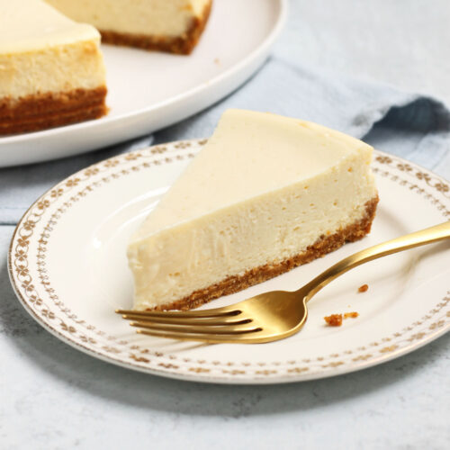

.png)
New York Style Cheesecake
Indulge in the rich, creamy texture of a classic New York-style cheesecake. This decadent dessert features a smooth, velvety filling made with fresh cream cheese and a perfectly balanced hint of vanilla, all atop a buttery graham cracker crust. Whether for a special occasion or a personal treat, this cheesecake is a timeless favorite that never disappoints.
Ingredients
- 1 ½ cups graham cracker crumbs
- ¼ cup sugar
- ½ cup melted butter
- 4 packages cream cheese (8 oz each), softened
- 1 ¼ cups sugar
- 1 tsp vanilla extract
- 4 large eggs
Steps
- Preheat the oven to 325°F (163°C).
- Mix graham cracker crumbs, sugar, and melted butter. Press into the bottom of a 9-inch springform pan to form the crust.
- Beat cream cheese, sugar, and vanilla until smooth. Add eggs, one at a time, beating well after each addition.
- Pour the filling over the crust in the pan and smooth the top.
- Bake for 50-60 minutes or until the center is almost set. Let cool, then chill for at least 4 hours before serving.